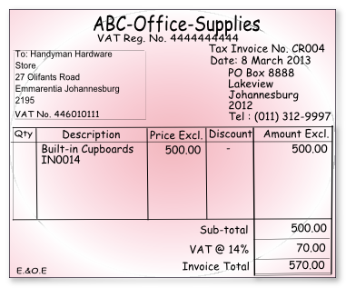
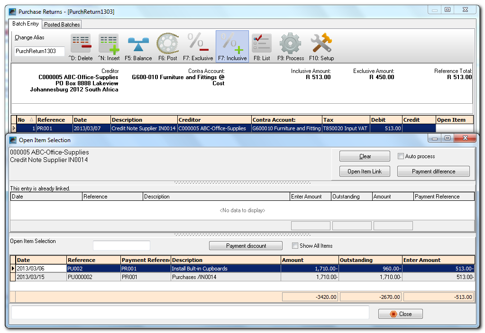
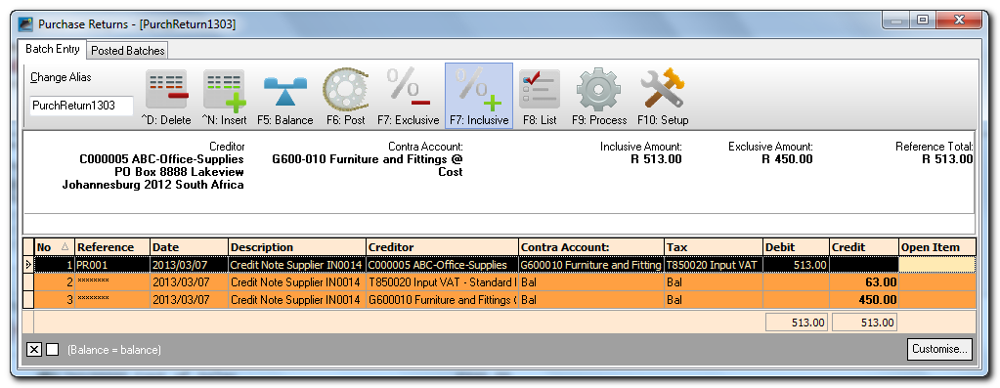
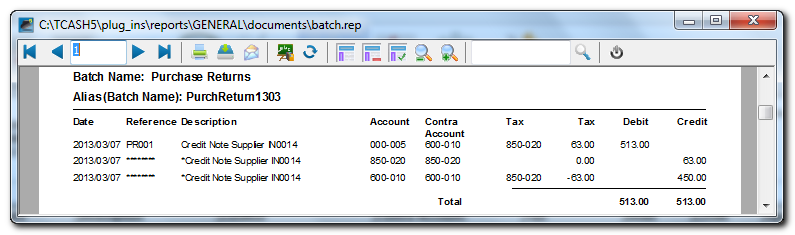
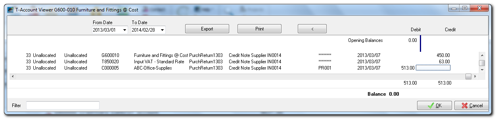

Purchase returns journal
You need to capture all the supplier credit notes (supplier returns) you have received for purchases on credit from, your creditors (suppliers).
This journal is used to record your supplier returns credit purchases for the day. You would record the supplier invoice number, date of the supplier invoice, details, the creditor (from whom you have purchased), Input VAT/GST/Sales Tax (if you are registered for VAT/GST/Sales Tax) and the amount - including or excluding VAT/GST/Sales Tax, if you are registered for VAT/GST/Sales Tax and VAT/GST/Sales Tax is applicable to a transaction.
|
|
In addition to the Purchase journal / Purchase returns journal in the Batch entry mode, you may also use the Document Entry to create Supplier return documents using the following stock item types:
|
|
|
Supplier returns are also usually linked to the Purchase journal in Setup → Documents setup (Supplier returns). You may add a Purchase returns Journal in Setup → Batch types and link it to Supplier returns. |

Batch transactions
To enter Supplier Credit notes / Purchase returns transactions:
- On the Default ribbon, select Batch entry (F2).
- Select the Purchase returns jnl. and click on the Open button. The Purchase returns journal screen will be displayed.
- Enter the Alias (batch name) in the Change alias field on the Topbar of the Batch entry screen and press the Enter key. In this example we enter ''PurchReturn1303'' to indicate that the purchases (creditor (supplier / vendor) credit notes) for March 2013 was entered in this Purchase returns journal.
|
|
The alias option allows you to identify a batch by a unique name. You will be able to select the batch by alias or batch name if you need to reverse the posted batch or import a posted batch. |

- Click on the F10:Setup icon to set the Options for the batch, if necessary.
|
|
If no contra account is displayed on the Batch type selection screen, you need to set up the options for the batch. If you have not yet set the Purchase journal / Purchase returns journal, or if your requirements should change, you need to change the settings of the batch. |
|
|
If you need to enter transactions with Tax accounts, you need to check that the Consolidate balancing field is not selected (not ticked) on the Standard tab of the F10:Setup (Options for this batch screen). |


|
|
Note that for Supplier Credit notes, the Amount entry field should be set to debit. |
|
|
If you have a few supplier invoices, you may enter a negative (minus sign), followed by the amount in the debit column. These amounts will be transferred to the credit column. |
|
|
If you have many supplier credit notes to capture, you need to set the amount entry to debit in the setup options for the Purchase journal, before entering supplier credit notes in the Purchase journal. Alternatively, you may enter the supplier credit notes in the Purchase returns journal. |
|
|
Select the “Creditor” option for the Account lookup type, since you only need to select “Creditor” option when you enter transactions for purchases on credit to creditors (suppliers) only. |
|
|
If you wish to allocate different transactions to different purchase accounts, setup one contra account per line. |
- Enter the following supplier credit note in the Purchase journal / Purchase returns journal:

- Enter and/or select the following:
- Reference - Enter the purchase or other applicable number you allocate to the supplier invoice.
- Date - Enter or select the date of the transaction.
- Description - Enter a brief description for the transaction.
- Account - Select the Creditor account.
- Contra account - Select the account to be debited with the credit purchase (expense or asset).
- Tax - Select the applicable Input Tax account for the expense or purchase.
|
|
This is only applicable if Input VAT/GST/Sales Tax is allowed on a transaction, and if you are registered as a VAT/GST/Sales Tax Vendor. If no VAT/GST/Sales Tax is applicable to the transaction, select the "Empty" option as the "No Tax" code. |
|
|
You may also select to hide the Tax column, and lookup in the Setup Options for the Purchase journal, if no VAT/GST/Sales Tax is applicable to all transactions in this batch; or if you are not registered as a VAT/GST/Sales Tax Vendor. |
- Amount - Enter the amount of the transaction (Inclusive or Exclusive of VAT/GST/Sales Tax) in the Credit amount column.
- After entering the supplier invoices in the Purchase returns journal, the transactions will be displayed as follows: 
- Click on the F5:Balance icon to balance the batch. The balancing transactions will be displayed as follows:

- osFinancials will generate balancing entries to the similar selected purchase contra accounts, and the Input VAT/GST/Sales Tax account.
|
|
If the Consolidate balancing option is selected in the Setup Options for this batch, the description for the balancing entries or transactions, will be displayed as "BALANCING ENTRY Purchase returns jnl". |
|
|
If the description is displayed as "BALANCING ENTRY Purchase returns jnl", the Tax reports may not include these transactions correctly. This implies that the Consolidate balancing field is ticked on the Standard tab of the F10:Setup (Options for this batch screen). You need to deselect (remove the tick) of the Consolidate balancing field on the Standard tab of the F10:Setup (Options for this batch screen) and rebalance the batch. |
- Click on the F8:List icon to print a list of the transactions in the batch.

|
|
It is a good idea to list the batch, and check the entries on the batch thoroughly. If there are any errors, you may edit the batch, before posting the batch. |
- Click on the F6:Post icon, to post (update) the batch to the ledger.
|
|
It is not necessary to post (update) the transactions at the end of each day. You may add and/or post the transactions on a daily, or weekly basis, or at the end of a month. When you have entered a few transactions, you may close or exit the batch. The data will not be lost. |
T-Account view
Batch View

Report View
Click on the Print button.

|
Accounting equation
Debits = Credits Debit Creditor's ledger (i.e. individual = Credit General ledger (i.e. |